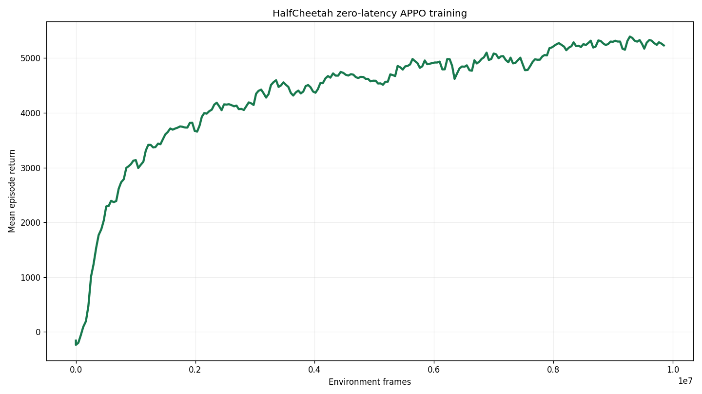
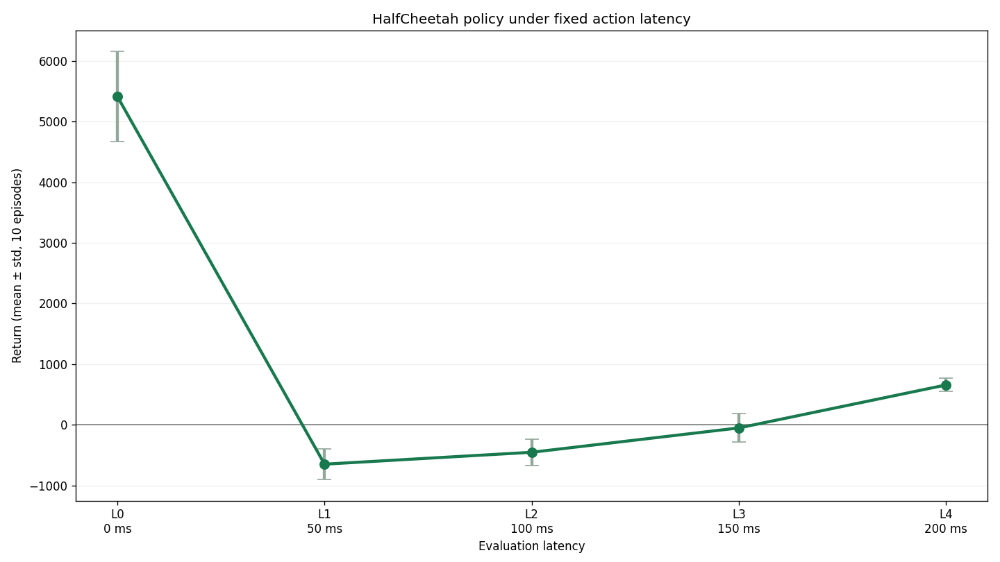
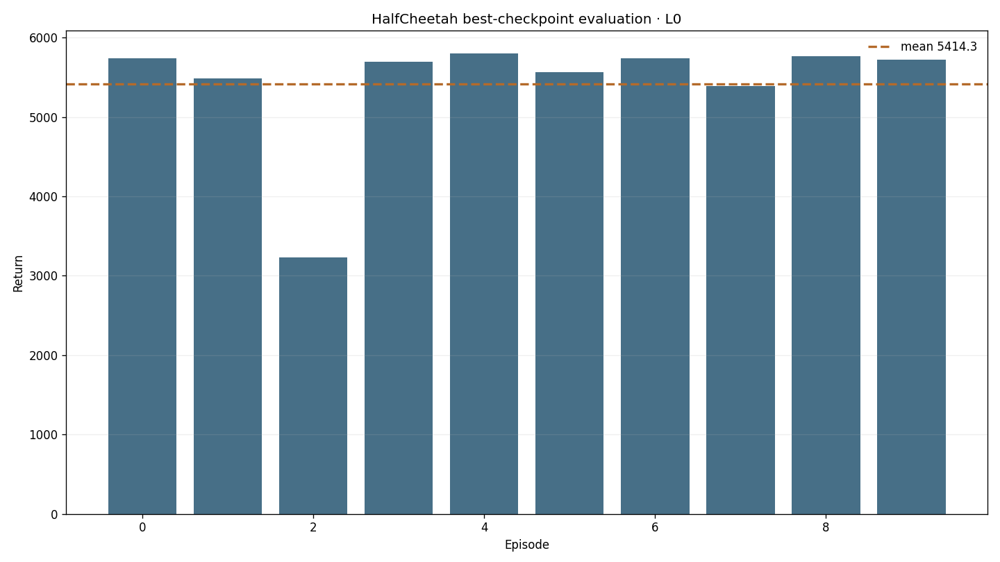

Independent wrapper
HalfCheetahContinuousActionEnv owns construction, six-dimensional clipping, and applied_action recording.
latency-sensitive-bench / verified Gymnasium adaptation
A task-owned wrapper preserves HalfCheetah-v4's native continuous action space. The completed RGB+state pipeline carries its 17-dimensional proprioceptive observation and six applied torques through teacher rollout, QwenOFT training, and latency-bench evaluation.
01 · Outcome
HalfCheetahContinuousActionEnv owns construction, six-dimensional clipping, and applied_action recording.
Synchronous Sample Factory APPO completed 10,006,528 L0 environment frames.
The best checkpoint completed L0–L4, ten deterministic 1,000-step episodes per latency.
100 teacher episodes, native 6D conversion, 5k QwenOFT training, and L0/L2 closed-loop evaluation completed.
02 · Frozen contract
HalfCheetah-v4, Gymnasium 0.29.1, MuJoCo 3.3.7.Box(-inf, inf, (17,), float64).Box(-1, 1, (6,), float32).dt=0.05 s, frame skip 5, model timestep 0.01 s.[0,0,0,0,0,0].03 · Small-model training
The run uses synchronous APPO, a 64×64 tanh MLP, rollout 64, batch 1024, two epochs, learning rate 0.00295 with linear decay, normalized observations and returns, and no recurrent policy.

MUJOCO_GL=egl PYTHONPATH=. conda run -n latency \
python -m training.train \
--config configs/examples/gymnasium/half_cheetah/small_model_train.yamlBest checkpoint: /mnt/checkpoints/latency-sensitive-bench/small_models/half_cheetah/gymnasium_half_cheetah_continuous_zero_latency_10m/checkpoint_p0/best_000019008_9732096_reward_5331.187.pth.
04 · Closed-loop evaluation



MUJOCO_GL=egl PYTHONPATH=. conda run -n latency \
python -m latency_bench.run \
--config configs/examples/gymnasium/half_cheetah/small_model_eval.yaml \
--checkpoint-path /mnt/checkpoints/latency-sensitive-bench/small_models/half_cheetah/gymnasium_half_cheetah_continuous_zero_latency_10m/checkpoint_p0/best_000019008_9732096_reward_5331.187.pth05 · RGB+state VLA
robot_type=rl_games_gymnasium with train-derived min/max state normalization.steps_5000_pytorch_model.pt.
06 · Evidence
media builder · 23 focused contract/export tests passed locally and remotely
Environment facts follow the Gymnasium HalfCheetah documentation. The training recipe and reference result follow the vendored Sample Factory HalfCheetah model record.
07 · Limits